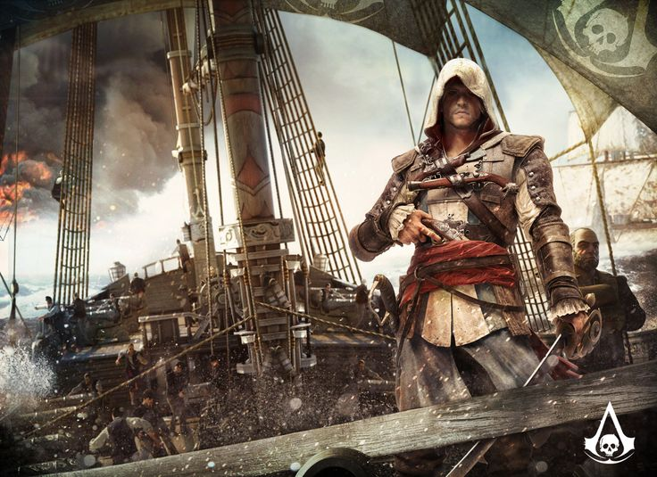

Компьютерная игра в жанре action-adventure, разработанная компанией Ubisoft Montreal и изданная Ubisoft. Является шестой основной игрой в серии Assassin’s Creed. Сюжет игры сосредоточен вокруг тем свободы и предательства. Эдвард Кенуэй — сложный персонаж. В начале игры он представляет собой беззаботного авантюриста, но по мере его развития, и столкновения с Ассасинами и Тамплиерами, он становится более глубоким и многослойным характером. Действие игры разворачивается в открытом мире Карибского моря. Игроки могут свободно исследовать как крупные города, так и безлюдные острова, находя сокровища, скрытые места и незабываемые пейзажи.

Год выпуска: 2013
Разработчик: Ubisoft Montreal
Достоверность: 6/10
Игра недоступна в Российском Steam
Купить на Plati.Market
Разработчик: Ubisoft Montreal
Достоверность: 6/10
Игра недоступна в Российском Steam
Купить на Plati.Market
Минимальные требования:
Операционная система: Windows Vista SP2, Windows 7 SP1 или Windows 8 (32/64-битные версии)
Процессор: Intel Core2Quad Q8400 @ 2,6 ГГц или AMD Athlon II X4 620 @ 2,6 ГГц
Оперативная память: 2 ГБ
Видеокарта: Nvidia Geforce GTX 260 или AMD Radeon HD 4870 (512 МБ VRAM с моделью шейдера 4.0 или выше)
Место на диске: 30 ГБ
Операционная система: Windows Vista SP2, Windows 7 SP1 или Windows 8 (32/64-битные версии)
Процессор: Intel Core2Quad Q8400 @ 2,6 ГГц или AMD Athlon II X4 620 @ 2,6 ГГц
Оперативная память: 2 ГБ
Видеокарта: Nvidia Geforce GTX 260 или AMD Radeon HD 4870 (512 МБ VRAM с моделью шейдера 4.0 или выше)
Место на диске: 30 ГБ